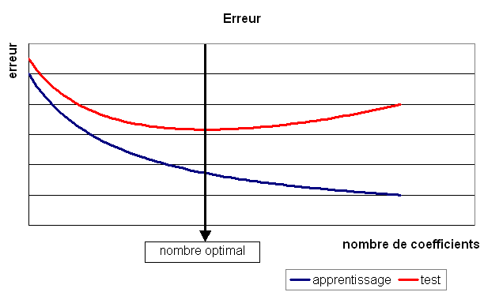
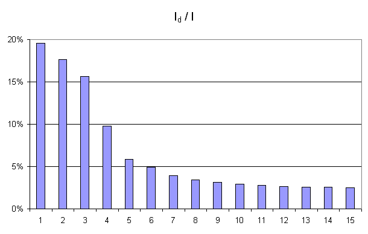

Listes des définitions et théorèmes#
Corollaires#
Corollaire C1 : Estimateur de l’aire sous la courbe ROC
On dispose des scores \(\vecteur{Y_1}{Y_n}\) des expériences qui ont réussi et \(\vecteur{X_1}{X_m}\) les scores des expériences qui ont échoué. On suppose également que tous les scores sont indépendants. Les scores \((Y_i)\) sont identiquement distribués, il en est de même pour les scores \((X_i)\). Un estimateur de l’aire \(A\) sous la courbe ROC” est :
Corollaire C1 : approximation d’une fonction créneau
Soit \(C \subset \R^p, \; C= \acc { \vecteur{y_1}{y_p} \in \R^p \, | \forall i\in \intervalle{1}{p},\, 0 \leqslant y_{i}\leqslant 1 }\), alors :
Corollaire C1 : nullité d’un coefficient
Les notations utilisées sont celles du théorème sur loi asymptotique des coefficients. Soit \(w_k\) un poids du réseau de neurones d’indice quelconque \(k\). Sa valeur estimée est \(\widehat{w_k}\), sa valeur optimale \(w^*_k\). D’après le théorème :
Corollaire C2 : Variance de l’estimateur AUC
On note \(P_X = \pr{ X < \min\acc{Y_i,Y_j }}\) et \(P_Y = \pr { \max\acc{X_i,X_j} < Y}\). \(X_i\) et \(X_j\) sont de même loi que \(X\), \(Y_i\), \(Y_j\) sont de même loi que \(Y\). La variance de l’estimateur \(\hat{A}\) définie par (1) est :
Corollaire C2 : approximation d’une fonction indicatrice
Soit \(C\subset\R^p\) compact, alors :
Corollaire C3 : famille libre de fonctions
Soit \(F_{p}\) l’ensemble des fonctions continues de \(C\subset\R^{p}\longrightarrow\R\) avec \(C\) compact muni de la norme : \(\left\| f\right\| =\underset{x\in C}{\sup}\left\| f\left( x\right) \right\|\) Alors l’ensemble \(E_{p}\) des fonctions sigmoïdes :
est une base de \(F_{p}\).
Définitions#
Définition D1 : B+ tree
Soit \(B_n\) un B+ tree, soit \(N\) un noeud de \(B_n\), il contient un vecteur \(V\pa{N} = \vecteur{x_1}{x_t}\) avec \(0 \infegal t \infegal n\) et \(x_1 < ... < x_t\). Ce noeud contient aussi exactement \(t-1\) noeuds fils notés \(\vecteur{N_1}{N_{t-1}}\). On désigne par \(D\pa{N_t}\) l’ensemble des descendants du noeud \(N_t\) et \(G\pa{N_t} = \acc{ V\pa{M} \sac M \in D\pa{N_t}}\). Le noeud \(N\) vérifie :
Définition D1 : Courbe ROC
On suppose que \(Y\) est la variable aléatoire des scores des expériences qui ont réussi. \(X\) est celle des scores des expériences qui ont échoué. On suppose également que tous les scores sont indépendants. On note \(F_Y\) et \(F_X\) les fonctions de répartition de ces variables. \(F_Y(s)=\pr{Y \infegal s}\) et \(F_X(s)=\pr{X \infegal s}\). On définit en fonction d’un seuil \(s \in \R\) :
\(R(s) = 1 - F_Y(s) = \pr{Y > s}\)
\(E(s) = 1 - F_X(s) = \pr{X > s}\)
La courbe ROC est le graphe \(\pa{E(s),R(s)}\) lorsque \(s\) varie dans \(\R\).
Définition D1 : Dynamic Minimum Keystroke
On définit la façon optimale de saisir une requête sachant un système de complétion \(S\) comme étant le minimum obtenu :
Définition D1 : Dynamic Minimum Keystroke arrière
On définit la façon optimale de saisir une requête sachant un système de complétion \(S\) comme étant le minimum obtenu :
Définition D1 : Minimum Keystroke
On définit la façon optimale de saisir une requête sachant un système de complétion \(S\) comme étant le minimum obtenu :
La quantité \(K(q, k, S)\) représente le nombre de touche vers le bas qu’il faut taper pour obtenir la chaîne \(q\) avec le système de complétion \(S\) et les \(k\) premières lettres de \(q\).
Définition D1 : Régression quantile
On dispose d’un ensemble de n couples \((X_i, Y_i)\) avec \(X_i \in \R^d\) et \(Y_i \in \R\). La régression quantile consiste à trouver \(\alpha, \beta\) tels que la somme \(\sum_i \abs{\alpha + \beta X_i - Y_i}\) est minimale.
Définition D1 : bruit blanc
Une suite de variables aléatoires réelles \(\pa{\epsilon_i}_{1 \infegal i \infegal N}\) est un bruit blanc :
\(\exists \sigma > 0\), \(\forall i \in \intervalle{1}{N}, \; \epsilon_i \sim \loinormale{0}{\sigma}\)
\(\forall \pa{i,j} \in \intervalle{1}{N}^2, \; i \neq j \Longrightarrow \epsilon_i \independant \epsilon_j\)
Définition D1 : loi de Poisson et loi exponentielle
Si une variable \(X\) suit une loi de Poisson de paramète \(\lambda t\), elle a pour densité :
Si une variable \(X\) suit une loi exponentielle de paramètre \(\mu\), elle a pour densité :
Définition D1 : mot
On note \(\mathcal{C}\) l’espace des caractères ou des symboles. Un mot ou une séquence est une suite finie de \(\mathcal{C}\). On note \(\mathcal{S}_\mathcal{C} = \cup_{k=1}^{\infty} C^k\) l’espace des mots formés de caractères appartenant à \(\mathcal{C}\).
Définition D1 : mélange de lois normales
Soit \(X\) une variable aléatoire d’un espace vectoriel de dimension \(d\), \(X\) suit un la loi d’un mélange de \(N\) lois gaussiennes de paramètres \(\pa{\mu_i, \Sigma_i}_ {1 \infegal i \infegal N}\), alors la densité \(f\) de \(X\) est de la forme :
Avec : \(\sum_{i=1}^{N} \; p_i = 1\).
Définition D1 : neurone
Un neurone à \(p\) entrées est une fonction \(f : \R^{p+1} \times \R^p \longrightarrow \R\) définie par :
\(g : \R \longrightarrow \R\)
\(W \in \R^{p+1}\), \(W=\pa{w_1,\dots,w_{p+1}}\)
\(\forall x \in \R^p, \; f\pa{W,x} = g \pa { \sum_{i=1}^{p} w_i x_i + w_{p+1}}\) avec \(x = \pa{x_1,\dots,x_p}\)
Définition D1 : neurone distance
Un neurone distance à \(p\) entrées est une fonction \(f : \R^{p+1} \times \R^p \longrightarrow \R\) définie par :
\(g : \R \dans \R\)
\(W \in \R^{p+1}\), \(W=\pa{w_1,\dots,w_{p+1}} = \pa{W',w_{p+1}}\)
\(\forall x \in \R^p, \; f\pa{W,x} = e^{-\norm{W'-x}^2 + w_{p+1}}\) avec \(x = \pa{x_1,\dots,x_p}\)
Définition D1 : orthonormalisation de Schmidt
L’orthonormalisation de Shmidt :
Soit \(\left( e_{i}\right) _{1\leqslant i\leqslant N}\) une base de \(\R^{p}\)
On définit la famille \(\left( \varepsilon_{i}\right) _{1\leqslant i\leqslant p}\) par :
Définition D2 : Dynamic Minimum Keystroke modifié
On définit la façon optimale de saisir une requête sachant un système de complétion \(S\) comme étant le minimum obtenu :
Définition D2 : Régression quantile
On dispose d’un ensemble de n couples \((X_i, Y_i)\) avec \(X_i \in \R^d\) et \(Y_i \in \R\). La régression quantile consiste à trouver \(\alpha, \beta\) tels que la somme \(\sum_i p \abs{\alpha + \beta X_i - Y_i}^+ + (1-p) \abs{\alpha + \beta X_i - Y_i}^-\) est minimale.
Définition D2 : couche de neurones
Soit \(p\) et \(n\) deux entiers naturels, on note \(W \in \R^{n\pa{p+1}} = \pa{W_1,\dots,W_n}\) avec \(\forall i \in \intervalle{1}{n}, \; W_i \in \R^{p+1}\). Une couche de \(n\) neurones et \(p\) entrées est une fonction :
vérfifiant :
\(\forall i \in \intervalle {1}{n}, \; f_i\) est un neurone.
\(\forall W \in \R^{n\pa{p+1}} \times \R^p, \; F\pa{W,x} = \pa {f_1\pa{W_1,x}, \dots, f_n\pa{W_n,x}}\)
Définition D2 : distance d’édition
La distance d’édition \(d\) sur \(\mathcal{S}_\mathcal{C}\) est définie par :
Définition D2 : neurone distance pondérée
Pour un vecteur donné \(W \in \R^p = \pa{w_1,\dots,w_p}\), on note \(W_i^j = \pa{w_i,\dots,w_j}\). Un neurone distance pondérée à \(p\) entrées est une fonction \(f : \R^{2p+1} \times \R^p \longrightarrow \R\) définie par :
\(g : \R \dans \R\)
\(W \in \R^{2p+1}\), \(W=\pa{w_1,\dots,w_{2p+1}} = \pa{w_1,w_{2p+1}}\)
\(\forall x \in \R^p, \; f\pa{W,x} = \exp \cro {-\cro{\sum_{i=1}^{p} w_{p+i}\pa{w_i - x_i}^2 } + w_{p+1}}\) avec \(x = \pa{x_1,\dots,x_p}\)
Définition D2 : taux de classification à erreur fixe
On cherche un taux de reconnaissance pour un taux d’erreur donné. On dispose pour cela d’une courbe ROC obtenue par l’algorithme de la courbe ROC et définie par les points \(R_{OC} = \acc{ \pa{e_j,r_j} | 1 \infegal j \infegal k}\). On suppose ici que \(\pa{e_1,r_1} = \pa{1,1}\) et \(\pa{e_k,r_k} = \pa{0,}\). Si ce n’est pas le cas, on ajoute ces valeurs à l’ensemble \(R_{OC}\).
Pour un taux d’erreur donné \(e^*\), on cherche \(j^*\) tel que :
Le taux de reconnaissance \(\rho\) cherché est donné par :
Définition D3 : distance entre caractères
Soit \(\mathcal{C}' = \mathcal{C} \bigcup \acc{.}\)
l’ensemble des caractères ajouté au caractère vide ..
On note \(c : \pa{\mathcal{C}'}^2 \longrightarrow \R^+\)
la fonction coût définie comme suit :
On note \(\mathcal{S}_\mathcal{C'}^2 = \cup_{n=1}^{\infty} \pa{\mathcal{C'}^2}^n\) l’ensemble des suites finies de \(\mathcal{C'}\).
Définition D3 : réseau de neurones multi-couches ou perceptron
Un réseau de neurones multi-couches à \(n\) sorties, \(p\) entrées et \(C\) couches est une liste de couches \(\vecteur{C_1}{C_C}\) connectées les unes aux autres de telle sorte que :
\(\forall i \in \intervalle {1}{C}\), chaque couche \(C_i\) possède \(n_i\) neurones et \(p_i\) entrées
\(\forall i \in \intervalle{1}{C-1}, \; n_i = p_{i+1}\), de plus \(p_1 = p\) et \(n_C = n\)
Les coefficients de la couche \(C_i\) sont notés \(\pa {W_1^i,\dots,W_{n_i}^i}\), cette couche définit une fonction \(F_i\). Soit la suite \(\pa{Z_i}_{0\infegal i \infegal C}\) définie par :
On pose \(M = M = \sum_{i=1}^{C}n_i\pa{p_i+1}\), le réseau de neurones ainsi défini est une fonction \(F\) telle que :
Définition D4 : mot acceptable
Soit \(m = \vecteur{m_1}{m_n}\) un mot tel qu’il est défini précédemment. Soit \(M=\pa{M_i}_{i \supegal 1}\) une suite infinie de caractères, on dit que \(M\) est un mot acceptable pour \(m\) si et seulement si la sous-suite extraite de \(M\) contenant tous les caractères différents de \(\acc{.}\) est égal au mot \(m\). On note \(acc\pa{m}\) l’ensemble des mots acceptables pour le mot \(m\).
Définition D5 : distance d’édition
Soit \(c\) la distance d’édition, \(d\) définie sur \(\mathcal{S}_\mathcal{C}\) est définie par :
Définition D6 : distance d’édition étendue
Soit d^* la distance d’édition définie en 2 pour laquelle les coûts de comparaison, d’insertion et de suppression sont tous égaux à 1. La distance d’édition \(d'\) sur \(\mathcal{S}_\mathcal{C}\) est définie par :
Définition D7 : distance d’édition tronquée
Soient deux mots \(\pa{m_1,m_2}\), on définit la suite :
Par :
Définition D8 : distance d’édition tronquée étendue
Soit deux mots \(\pa{m_1,m_2}\), on définit la suite :
par :
Lemmes#
Lemme L1 : Dynamic Minimum Keystroke
On note \(d(q, S)\) la longueur du plus long préfixe de \(q\) inclus dans \(S\).
Lemme L1 : M” et sous-ensemble
On suppose que la complétion \(q\) est préfixe pour la requête \(q'\) et \(\sigma(q) < \sigma(q')\) ce qui signifie que la complétion \(q\) est toujours affichée avant la complétion \(q'\) si elles apparaissent ensemble. Alors \(M'(q, S) < M'(q', S)\). Plus spécifiquement, si on considère l’ensemble \(S'(q) = \acc{ s-q \in S | q \prec s }\) (\(s-q\) est la complétion \(s\) sans son préfixe \(q\)).
Lemme L1 : Rang k
On note \(M=(m_{ij})\), \(W^k=(w^k_{il})\), \(H^k=(h^k_{lj})\) avec \(1 \infegal i \infegal p\), \(1 \infegal j \infegal q\), et \(1 \infegal l \infegal k\) avec \(k < \min(p,q)\). On suppose que les matrices sont solution du problème d’optimisation \(\min_{W,H} \norm{ M - WH }^2\). On suppose que \(rang(M) \supegal k\). Alors les les matrices \(W^k\) et \(H^k\) sont de rang \(k\).
Lemme L1 : inertie minimum
Soit \(\vecteur{X_1}{X_P} \in \pa{\R^N}^P\), \(P\) points de \(\R^N\), le minimum de la quantité \(Q\pa{Y \in \R^N}\) :
est atteint pour \(Y=G=\dfrac{1}{P} \sum_{i=1}^{P} X_i\) le barycentre des points \(\vecteur{X_1}{X_P}\).
Lemme L2 : Projection
On note \(M=(m_{ij})\), \(W^k=(w^k_{il})\), \(H^k=(h^k_{lj})\) avec \(1 \infegal i \infegal p\), \(1 \infegal j \infegal q\), et \(1 \infegal l \infegal k\) avec \(k < \min(p,q)\). On suppose que les matrices sont solution du problème d’optimisation \(\min_{W,H} \norm{ M - WH }^2\). On considère que la matrice \(M\) est un ensemble de \(q\) points dans dans un espace vectoriel de dimension \(p\). La matrice \(WH\) représente des projections de ces points dans l’espace vectoriel engendré par les \(k\) vecteurs colonnes de la matrice \(W\).
Lemme L2 : calcul de *M”(q, S)*
On suppose que \(p(q, S)\) est la complétion la plus longue de l’ensemble \(S\) qui commence \(q\) :
La métrique \(M'(q, S)\) vérifie la propriété suivante :
Figures#
Figure F1 : Gradient conjugué

Gradient et gradient conjugué sur une ligne de niveau de la fonction \(G\pa{x,y} = 3x^2 + y^2\), le gradient est orthogonal aux lignes de niveaux de la fonction \(G\), mais cette direction est rarement la bonne à moins que le point \(\pa{x,y}\) se situe sur un des axes des ellipses, le gradient conjugué agrège les derniers déplacements et propose une direction de recherche plus plausible pour le minimum de la fonction. Voir Conjugate Gradient Method.
Figure F1 : Modèle optimal pour la base de test
Figure F1 : Principe de la compression par un réseau diabolo
Figure F1 : Réseau de neurones adéquat pour la classification

Figure F1 : neurone graphique
Le vecteur \(\left( x_1,...,x_p\right) \in \R^p\) joue le rôle des entrées. \(y\) est appelé parfois le potentiel. \(y=\sum_{i=1}^{p} w_ix_i+b\). \(z\) est appelée la sortie du neurone. \(f\) est appelée la fonction de transfert ou de seuil. \(z=f \pa{y} = f \pa { \sum_{i=1}^{p} w_ix_i+b }\).
Figure F2 : Exemple de minimal locaux

Figure F2 : Modèle du perceptron multi-couche (multi-layer perceptron, MLP)

\(\vecteur{x_1}{x_p}\) : entrées
\(C_i\) nombre de neurones sur la couche \(i\), \(C_0 = p\)
\(z_{c,i}\) sortie du neurone \(i\), de la couche \(c\), par extension, \(z_{0,i} = x_i\)
\(y_{c,i}\) potentiel du neurone \(i\) de la couche \(c\)
\(w_{c,i,j}\) coefficient associé à l’entrée \(j\) du neurone \(i\) de la couche \(c\),
\(b_{c,i}\) biais du neurone \(i\) de la couche \(c\)
\(f_{c,i}\) fonction de seuil du neurone \(i\) de la couche \(c\)
Figure F2 : Réseau de neurones pour lequel la sélection de connexions s’applique

Figure F2 : Réseau diabolo : réduction d’une dimension
Ce réseau possède 3 entrées et 3 sorties Minimiser l’erreur \(\sum_{k=1}^N E\left( X_{k},X_{k}\right)\) revient à compresser un vecteur de dimension 3 en un vecteur de dimension 2. Les coefficients de la première couche du réseau de neurones permettent de compresser les données. Les coefficients de la seconde couche permettent de les décompresser.
Figure F3 : Courbe d’inertie pour l’ACP
Courbe d’inertie : point d’inflexion pour \(d=4\), l’expérience montre que généralement, seules les projections sur un ou plusieurs des quatre premiers vecteurs propres reflètera l’information contenue par le nuage de points.
Problèmes#
Problème P1 : Classification
Soit une variable aléatoire \(X\) et une variable aléatoire discrète \(Y \in \N\), l’objectif est d’approximer la fonction \(\esp\pa{Y | X} = f\pa{X}\). Les données du problème sont un échantillon de points : \(\acc { \pa{ X_{i},Y_{i} } | 1 \infegal i \infegal N }\) avec \(\forall i \in \ensemble{1}{N}, \; Y_i \in \ensemble{1}{C}\) et un modèle paramétré avec \(\theta\) :
avec \(n \in \N\), \(h\) est une fonction de paramètre \(\theta\) à valeur dans \(\cro{0,1}\) et vérifiant la contrainte : \(\sum_{c=1}^C h(\theta,X,c) = 1\).
Problème P1 : Factorisation de matrices positifs
Soit \(M \in \mathcal{M}_{pq}\), on cherche les matrices à coefficients positifs \(W \in \mathcal{M}_{pk}\) et \(H \in \mathcal{M}_{kq}\) qui sont solution du problème d’optimisation :
Problème P1 : Optimiser un système de complétion
On suppose que l’ensemble des complétions \(C=\acc{c_j}\) est connu. On souhaite ordonner cet ensemble pour obtenir l’ensemble ordonné des complétions \(S=(s_i)\) qu’on considère comme une permutation \(\sigma\) de l’ensemble de départ : \(S(\sigma) = (s_i) = (c_{\sigma(j)})\). Ce système de complétion est destiné à un des utilisateurs qui forment des recherches ou requêtes \(Q=(q_i, w_i)_{1 \infegal i \infegal N_Q}\). \(q_i\) est la requête, \(w_i\) est la fréquence associée à cette requête. On définit l’effort demandé aux utilisateurs par ce système de complétion :
Déterminer le meilleur système de complétion revient à trouver la permutation \(\sigma\) qui minimise \(E(C, Q, \sigma)\).
Problème P1 : Régression
Soient deux variables aléatoires \(X\) et \(Y\), l’objectif est d’approximer la fonction \(\esp\pa{Y | X} = f\pa{X}\). Les données du problème sont un échantillon de points \(\acc{ \pa{ X_{i},Y_{i} } | 1 \infegal i \infegal N }\) et un modèle paramétré avec :math:theta` :
avec \(n \in \N\), \(\pa{\epsilon_{i}}_{1 \infegal i \infegal N}\) bruit blanc, \(f\) est une fonction de paramètre \(\theta\).
Problème P1 : analyse en composantes principales (ACP)
Soit \(\pa{X_i}_{1 \infegal i \infegal N}\) avec \(\forall i \in \ensemble{1}{N}, \; X_i \in \R^p\). Soit \(W \in M_{p,d}\pa{\R}\), \(W = \vecteur{C_1}{C_d}\) où les vecteurs \(\pa{C_i}\) sont les colonnes de \(W\) et \(d < p\). On suppose également que les \(\pa{C_i}\) forment une base othonormée. Par conséquent :
\(\pa{W'X_i}_{1 \infegal i \infegal N}\) est l’ensemble des vecteurs \(\pa{X_i}\) projetés sur le sous-espace vectoriel engendré par les vecteurs \(\pa{C_i}\). Réaliser une analyse en composantes principales, c’est trouver le meilleur plan de projection pour les vecteurs \(\pa{X_i}\), celui qui maximise l’inertie de ce nuage de points, c’est donc trouver \(W^*\) tel que :
Le terme \(E\pa{W}\) est l’inertie du nuage de points \(\pa{X_i}\) projeté sur le sous-espace vectoriel défini par les vecteurs colonnes de la matrice \(W\).
Problème P1 : estimateur du maximum de vraisemblance
Soit un vecteur \(\vecteur{d_1}{d_N}\) tel que :
On cherche le vecteur \(\vecteur{p_1^*}{p_N^*}\) vérifiant :
Problème P2 : Optimiser un système de complétion filtré
On suppose que l’ensemble des complétions \(C=\acc{c_j}\) est connu. On souhaite ordonner cet ensemble pour obtenir l’ensemble ordonné des complétions \(S=(s_i)\) qu’on considère comme une permutation \(\sigma\) de l’ensemble de départ : \(S(\sigma) = (s_i) = (c_{\sigma(j)})\). On utilise aussi une fonction \(f\) qui filtre les suggestions montrées à l’utilisateur, elle ne change pas l’ordre mais peut cacher certaines suggestions si elles ne sont pas pertinentes. Ce système de complétion est destiné à un des utilisateurs qui forment des recherches ou requêtes \(Q=(q_i, w_i)_{1 \infegal i \infegal N_Q}\). \(q_i\) est la requête, \(w_i\) est la fréquence associée à cette requête. On définit l’effort demandé aux utilisateurs par ce système de complétion :
Déterminer le meilleur système de complétion revient à trouver la permutation \(\sigma\) qui minimise \(E(C, Q, \sigma, f)\).
Problème P2 : Prédiction
Soit \(M \in \mathcal{M}_{pq}\) et \(H \in \mathcal{M}_{kq}\), on cherche les matrices à coefficients positifs \(W \in \mathcal{M}_{pk}\) qui sont solution du problème d’optimisation :
Problème P2 : classification
Soit \(A\) l’échantillon suivant :
\(y_i^k\) représente la probabilité que l’élément \(X_i\) appartiennent à la classe \(k\) : \(\eta_i^k = \pr{Y_i = k | X_i}\)
Le classifieur cherché est une fonction \(f\) définie par :
Dont le vecteur de poids \(W^*\) est égal à :
Propriétés#
Problème P1 : Classification
Soit une variable aléatoire \(X\) et une variable aléatoire discrète \(Y \in \N\), l’objectif est d’approximer la fonction \(\esp\pa{Y | X} = f\pa{X}\). Les données du problème sont un échantillon de points : \(\acc { \pa{ X_{i},Y_{i} } | 1 \infegal i \infegal N }\) avec \(\forall i \in \ensemble{1}{N}, \; Y_i \in \ensemble{1}{C}\) et un modèle paramétré avec \(\theta\) :
avec \(n \in \N\), \(h\) est une fonction de paramètre \(\theta\) à valeur dans \(\cro{0,1}\) et vérifiant la contrainte : \(\sum_{c=1}^C h(\theta,X,c) = 1\).
Problème P1 : Factorisation de matrices positifs
Soit \(M \in \mathcal{M}_{pq}\), on cherche les matrices à coefficients positifs \(W \in \mathcal{M}_{pk}\) et \(H \in \mathcal{M}_{kq}\) qui sont solution du problème d’optimisation :
Problème P1 : Optimiser un système de complétion
On suppose que l’ensemble des complétions \(C=\acc{c_j}\) est connu. On souhaite ordonner cet ensemble pour obtenir l’ensemble ordonné des complétions \(S=(s_i)\) qu’on considère comme une permutation \(\sigma\) de l’ensemble de départ : \(S(\sigma) = (s_i) = (c_{\sigma(j)})\). Ce système de complétion est destiné à un des utilisateurs qui forment des recherches ou requêtes \(Q=(q_i, w_i)_{1 \infegal i \infegal N_Q}\). \(q_i\) est la requête, \(w_i\) est la fréquence associée à cette requête. On définit l’effort demandé aux utilisateurs par ce système de complétion :
Déterminer le meilleur système de complétion revient à trouver la permutation \(\sigma\) qui minimise \(E(C, Q, \sigma)\).
Problème P1 : Régression
Soient deux variables aléatoires \(X\) et \(Y\), l’objectif est d’approximer la fonction \(\esp\pa{Y | X} = f\pa{X}\). Les données du problème sont un échantillon de points \(\acc{ \pa{ X_{i},Y_{i} } | 1 \infegal i \infegal N }\) et un modèle paramétré avec :math:theta` :
avec \(n \in \N\), \(\pa{\epsilon_{i}}_{1 \infegal i \infegal N}\) bruit blanc, \(f\) est une fonction de paramètre \(\theta\).
Problème P1 : analyse en composantes principales (ACP)
Soit \(\pa{X_i}_{1 \infegal i \infegal N}\) avec \(\forall i \in \ensemble{1}{N}, \; X_i \in \R^p\). Soit \(W \in M_{p,d}\pa{\R}\), \(W = \vecteur{C_1}{C_d}\) où les vecteurs \(\pa{C_i}\) sont les colonnes de \(W\) et \(d < p\). On suppose également que les \(\pa{C_i}\) forment une base othonormée. Par conséquent :
\(\pa{W'X_i}_{1 \infegal i \infegal N}\) est l’ensemble des vecteurs \(\pa{X_i}\) projetés sur le sous-espace vectoriel engendré par les vecteurs \(\pa{C_i}\). Réaliser une analyse en composantes principales, c’est trouver le meilleur plan de projection pour les vecteurs \(\pa{X_i}\), celui qui maximise l’inertie de ce nuage de points, c’est donc trouver \(W^*\) tel que :
Le terme \(E\pa{W}\) est l’inertie du nuage de points \(\pa{X_i}\) projeté sur le sous-espace vectoriel défini par les vecteurs colonnes de la matrice \(W\).
Problème P1 : estimateur du maximum de vraisemblance
Soit un vecteur \(\vecteur{d_1}{d_N}\) tel que :
On cherche le vecteur \(\vecteur{p_1^*}{p_N^*}\) vérifiant :
Problème P2 : Optimiser un système de complétion filtré
On suppose que l’ensemble des complétions \(C=\acc{c_j}\) est connu. On souhaite ordonner cet ensemble pour obtenir l’ensemble ordonné des complétions \(S=(s_i)\) qu’on considère comme une permutation \(\sigma\) de l’ensemble de départ : \(S(\sigma) = (s_i) = (c_{\sigma(j)})\). On utilise aussi une fonction \(f\) qui filtre les suggestions montrées à l’utilisateur, elle ne change pas l’ordre mais peut cacher certaines suggestions si elles ne sont pas pertinentes. Ce système de complétion est destiné à un des utilisateurs qui forment des recherches ou requêtes \(Q=(q_i, w_i)_{1 \infegal i \infegal N_Q}\). \(q_i\) est la requête, \(w_i\) est la fréquence associée à cette requête. On définit l’effort demandé aux utilisateurs par ce système de complétion :
Déterminer le meilleur système de complétion revient à trouver la permutation \(\sigma\) qui minimise \(E(C, Q, \sigma, f)\).
Problème P2 : Prédiction
Soit \(M \in \mathcal{M}_{pq}\) et \(H \in \mathcal{M}_{kq}\), on cherche les matrices à coefficients positifs \(W \in \mathcal{M}_{pk}\) qui sont solution du problème d’optimisation :
Problème P2 : classification
Soit \(A\) l’échantillon suivant :
\(y_i^k\) représente la probabilité que l’élément \(X_i\) appartiennent à la classe \(k\) : \(\eta_i^k = \pr{Y_i = k | X_i}\)
Le classifieur cherché est une fonction \(f\) définie par :
Dont le vecteur de poids \(W^*\) est égal à :
Tables#
Théorèmes#
Théorème T1 : Aire sous la courbe (AUC)
On utilise les notations de la définition de la Courbe ROC. L’aire sous la courbe ROC est égale à \(\pr{ Y > X}\).
Théorème T1 : La factorisation de matrice est équivalente à une analyse en composantes principales
On note \(M=(m_{ij})\), \(W^k=(w^k_{il})\), \(H^k=(h^k_{lj})\) avec \(1 \infegal i \infegal p\), \(1 \infegal j \infegal q\), et \(1 \infegal l \infegal k\) avec \(k < \min(p,q)\). On suppose que les matrices sont solution du problème d’optimisation \(\min_{W,H} \norm{ M - WH }^2\). On considère que la matrice \(M\) est un ensemble de \(q\) points dans dans un espace vectoriel de dimension \(p\). On suppose \(p < q\). La matrice \(W_k\) définit un hyperplan identique à celui défini par les \(k\) vecteurs propres associés aux \(k\) plus grande valeurs propres de la matrice \(MM'\) où \(M'\) est la transposée de \(M\).
Théorème T1 : M”, ordre et sous-ensemble
Soit \(q\) une requête de l’ensemble de complétion \(S\) ordonnées selon \(sigma\). Si cet ordre vérifie :
On note l’ensemble \(S'(q[1..k]) = \acc{ q[k+1..len(q)] \in S }\) :
alors :
Théorème T1 : Régression linéaire après Gram-Schmidt
Soit une matrice \(X \in \mathcal{M}_{nd}\) avec \(n \supegal d\). Et un vecteur \(y \in \R^n\). D’après l”algorithme de Gram-Schmidt, il existe deux matrices telles que \(X P = T\) ou \(P' X' = T'\). \(P \in \mathcal{M}_{dd}\) et \(T \in \mathcal{M}_{nd}\). La matrice T est triangulaire supérieure et vérifie \(T'T = I_d\) (\(I_d\) est la matrice identité). Alors \(\beta = T' y P' = P' X' y P' = (X'X)^{-1}X'y\). \(\beta\) est la solution du problème d’optimisation \(\min_\beta \norme{y - X\beta}^2\).
Théorème T1 : [Farago1993]_ 1
Les notations sont celles de l’algorithme précédent. Il retourne le plus proche voisin \(x^*\) de \(x\) inclus dans \(E\). Autrement dit, \(\forall x \in X, \; x^* \in F\pa{x}\).
Théorème T1 : convergence de la méthode de Newton
Soit une fonction continue \(g : W \in \R^M \dans \R\) de classe \(C^{1}\). On suppose les hypothèses suivantes vérifiées :
H1 : \(\underset{W\in \R^q}{\arg\min} \; g\left( W\right) =\left\{ W^{\ast}\right\}\) est un singleton
H2 : \(\forall\varepsilon>0, \; \underset{\left| W-W^{\ast}\right| >\varepsilon}{\inf}\left[ \left( W-W^{\ast}\right) ^{\prime}.\nabla g\left( W\right) \right] >0\)
H3 : \(\exists\left( A,B\right) \in \R^2\) tels que \(\forall W\in\R^p,\; \left\| \nabla g\left( W\right) \right\| ^{2}\leqslant A^{2}+B^{2}\left\| W-W^{\ast}\right\| ^{2}\)
H4 : la suite \(\left( \varepsilon_{t}\right)_{t\geqslant0}\) vérifie, \(\forall t>0, \; \varepsilon_{t}\in \R_{+}^{\ast}\) et \(\sum_{t\geqslant 0}\varepsilon_{t}=+\infty\), \(\sum_{t\geqslant 0}\varepsilon_{t}^{2}<+\infty\)
Alors la suite \(\left( W_{t}\right) _{t\geqslant 0}\) construite de la manière suivante \(W_{0} \in \R^M\), \(\forall t\geqslant0\) : \(W_{t+1}=W_{t}-\varepsilon_{t}\,\nabla g\left( W_{t}\right)\) vérifie \(\lim_{ t \dans+\infty}W_{t}=W^{\ast}\).
Théorème T1 : convergence des k-means
Quelque soit l’initialisation choisie, la suite \(\pa{I_t}_{t\supegal 0}\) construite par l’algorithme des k-means converge.
Théorème T1 : convexité des classes formées par une régression logistique
On définit l’application \(\mathbb{R}^d \rightarrow \mathbb{N}\) qui associe la plus grande coordonnée \(f(X) = \arg \max_k (AX + B)_k\). A est une matrice \(\mathcal{M}_{dc}\), B est un vecteur de \(\mathbb{R}^d\), c est le nombre de parties. L’application f définit une partition convexe de l’espace vectoriel \(\mathbb{R}^d\).
Théorème T1 : densité des réseaux de neurones (Cybenko1989)
[Cybenko1989] Soit \(E_{p}^{q}\) l’espace des réseaux de neurones à \(p\) entrées et \(q\) sorties, possédant une couche cachée dont la fonction de seuil est une fonction sigmoïde \(\left( x\rightarrow 1-\frac{2}{1+e^{x}}\right)\), une couche de sortie dont la fonction de seuil est linéaire Soit \(F_{p}^{q}\) l’ensemble des fonctions continues de \(C\subset\R^{p}\longrightarrow\R^{q}\) avec \(C\) compact muni de la norme \(\left\| f\right\| =\underset{x\in C}{\sup}\left\| f\left( x\right) \right\|\) Alors \(E_{p}^{q}\) est dense dans \(F_{p}^{q}\).
Théorème T1 : distance d’édition
Soit \(c\) et \(d\) les fonctions définies respectivement par (1) et (2), alors :
\(c\) est une distance sur \(\mathcal{C} \Longleftrightarrow d\) est une distance sur \(\mathcal{S}_\mathcal{C}\)
Théorème T1 : loi asymptotique des coefficients
Soit \(f\) un réseau de neurone défini par perceptron composé de :
une couche d’entrées
une couche cachée dont les fonctions de transfert sont sigmoïdes
une couche de sortie dont les fonctions de transfert sont linéaires
Ce réseau sert de modèle pour la fonction \(f\) dans le problème de régression avec un échantillon \(\vecteur{\pa{X_1,Y_1}}{\pa{X_N,Y_N}}\), les résidus sont supposés normaux. La suite \(\pa{\widehat{\epsilon_k}}\) définie par (2) vérifie :
Et le vecteur aléatoire \(\widehat{W} - W^*\) vérifie :
Où la matrice \(\widehat{\Sigma_N}\) est définie par (2).
end{xtheorem}
Théorème T1 : résolution de l’ACP
Les notations utilisées sont celles du problème de l”ACP. Dans ce cas :
De plus \(S\) est l’espace vectoriel engendré par les \(d\) vecteurs propres de la matrice \(XX' = \sum_{i=1}^{N} X_i X_i'\) associées aux \(d\) valeurs propres de plus grand module.
Théorème T1 : résolution du problème du maximum de vraisemblance
La solution du problème du maximum de vraisemblance est le vecteur :
Théorème T1 : simulation d’une loi quelconque
Soit \(F=\int f\) une fonction de répartition de densité \(f\) vérifiant \(f > 0\), soit \(U\) une variable aléatoire uniformément distribuée sur \(\cro{0,1}\) alors \(F^{-1}(U)\) est variable aléatoire de densité \(f\).
Théorème T2 : Borne supérieure de l’erreur produite par k-means++
On définit l’inertie par \(J_(X) = \sum_{i=1}^{P} \; \min_G d^2(X_i, G)\). Si \(J_{OPT}\) définit l’inertie optimale alors \(\esp{J(X)} \infegal 8 (\ln C + 2) J_{OPT}(X)\).
Théorème T2 : [Farago1993]_ 2
Les notations sont celles du même algorithme. On définit une mesure sur l’ensemble \(X\), \(B\pa{x,r}\) désigne la boule de centre \(x\) et de rayon \(r\), \(Z \in X\) une variable aléatoire, de plus :
On suppose qu’il existe \(d > 0\) et une fonction \(f : X \longrightarrow \R\) tels que :
La convergence doit être uniforme et presque sûre. On note également \(F_N\) le nombre de calculs de dissimilarité effectués par l’algorithme où \(N\) est le nombre d’élément de \(E\), \(P\) désigne toujours le nombre de pivots, alors :
Théorème T2 : rétropropagation
Cet algorithme s’applique à un réseau de neurones vérifiant la définition du perceptron. Il s’agit de calculer sa dérivée par rapport aux poids. Il se déduit des formules (3), (4), (5) et (7) et suppose que l’algorithme de propagation a été préalablement exécuté. On note \(y'_{c,i} = \partialfrac{e}{y_{c,i}}\), \(w'_{c,i,j} = \partialfrac{e}{w_{c,i,j}}\) et \(b'_{c,i} = \partialfrac{e}{b_{c,i}}\).
Initialisation
Récurrence
Terminaison
Théorème T2 : simulation d’une loi de Poisson
On définit une suite infinie \((X_i)_i>0\) de loi exponentielle de paramètre \(\lambda\). On définit ensuite la série de variables aléatoires \(S_i = \sum_{k=1}^{i} X_k\) et enfin \(N(t) = \inf \acc{ i \sac S_i > t}\). Alors la variable aléatoire \(N(t)\) suit une loi de Poisson de paramètre \(\lambda t\).
Théorème T2 : sélection d’architecture
Les notations utilisées sont celles du théorème loi asymptotique des coefficients. \(f\) est un réseau de neurones de paramètres \(W\). On définit la constante \(\tau\), en général \(\tau = 3,84\) puisque \(\pr {X < \tau} = 0,95\) si \(X \sim \chi_1^2\).
Initialisation
Une architecture est choisie pour le réseau de neurones \(f\) incluant un nombre M de paramètres.
Apprentissage
Le réseau de neurones \(f\) est appris. On calcule les nombre et matrice \(\widehat{\sigma_N}^2\) et \(\widehat{\Sigma_N}\). La base d’apprentissage contient \(N\) exemples.
Test
Sélection
Théorème T3 : somme de loi exponentielle iid
Soit \(X_1,...,X_n\) \(n\) variables aléatoires indépendantes et identiquement distribuées de loi \(Exp(\lambda)\) alors la somme \(\sum_{k=1}^n X_k\) suit une loi \(Gamma(n,\lambda)\).